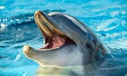

Os golfinhos, delfins, peixes-botos, botos ou toninhas são animais cetáceos pertencentes às famílias Delphinidae e Platanistidae. São perfeitamente adaptados para viver no ambiente aquático, sendo que existem 37 espécies conhecidas de golfinhos de água salgada e água doce.
